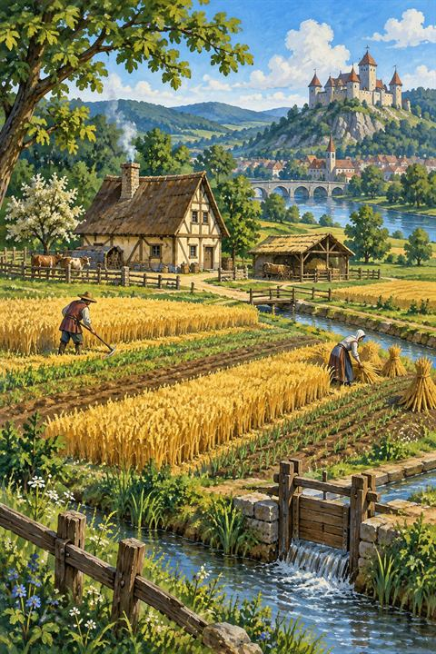

Patria
6 karet
Kolo1
V aktivní zóně nejsou žádné karty.

Rozvíjej krajinu, budovy i obyvatele svého panství. Hru nelze prohrát — tvůj odkaz určí získané body.
Průběh se automaticky uchovává v tomto zařízení. Uloženou hru můžeš také přenést jako soubor.